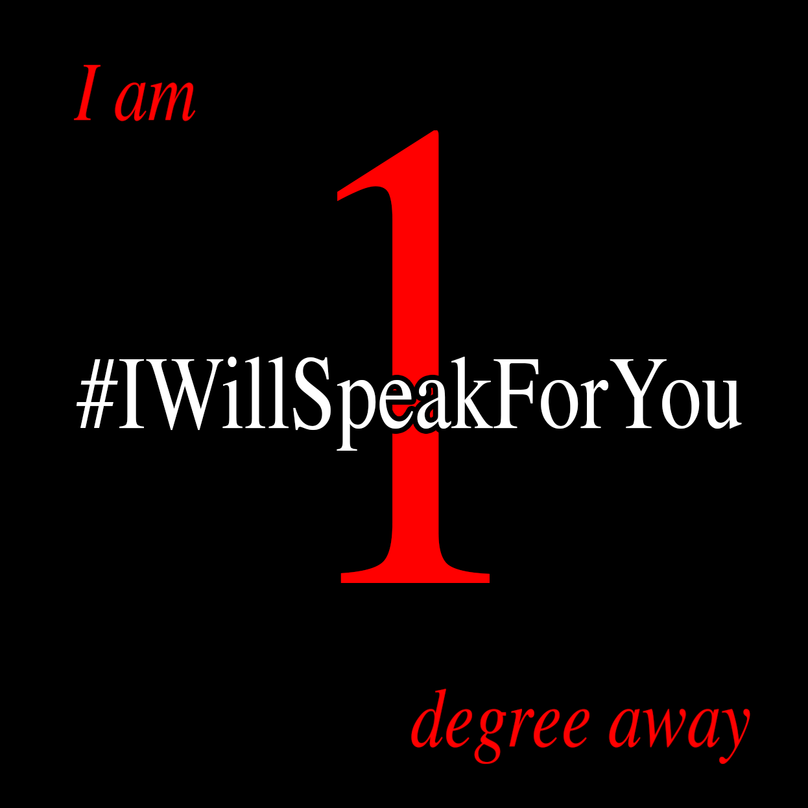

Profile picture

Copy/paste this text into your profile
First they came for the Socialists, and I did not speak out--
Because I was not a Socialist.
Then they came for the Trade Unionists, and I did not speak out--
Because I was not a Trade Unionist.
Then they came for the Jews, and I did not speak out--
Because I was not a Jew.
Then they came for me--and there was no one left to speak for me.